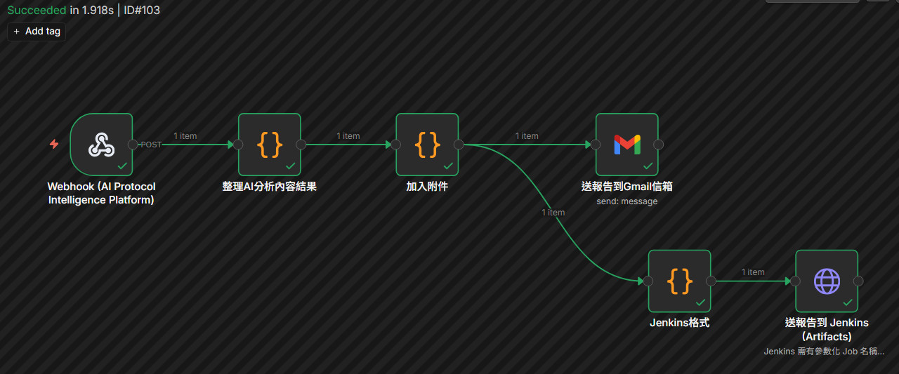
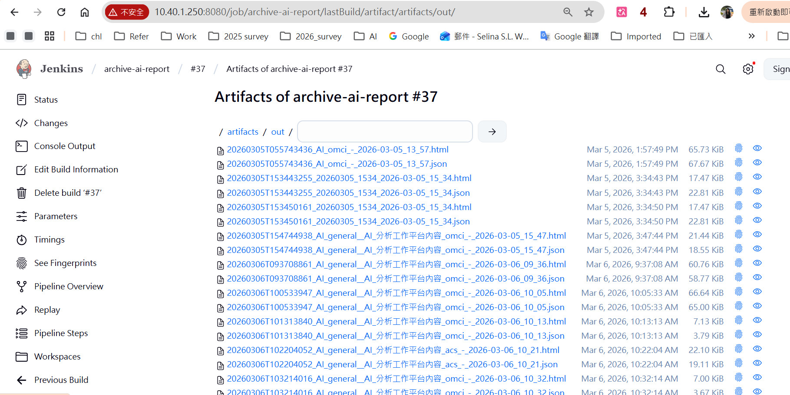

平台效能總覽
AI 驅動的自動化協定解析平台
整合 Token-based AI 技術與專家規則引擎，本平台將複雜的網路通訊封包轉化為具備商業洞察的測試報告。無論是 OMCI 行為分析、WAN 連線診斷還是 WiFi 7 性能測試，從原始封包到具備語義的工程解釋，實現從解析、比對、到生成的全自動化工作流。
🤖
⏱️ 分析效率對比 (人工 vs AI)
📊 協定解析完整度 (Token Coverage)
端到端自動化工作流
串接 AI 分析成果、外部自動化工具與持續整合系統。
🔗
n8n 報告推送與自動化
- Webhook 觸發: 平台將分析結果 JSON POST 到 n8n。
- 郵件自動化: 整理資料，發送 HTML 郵件報告 (含 Excel 附件)。
- 即時通知: 工程師第一時間在信箱收到 AI 分析總結。

🏗️
Jenkins 歸檔與整合
- 同步觸發: n8n 同步觸發 Jenkins Job。
- Artifacts 歸檔: 將 AI 分析報告 (JSON/HTML/Excel) 儲存。
- 歷史追蹤: 便於後續追蹤每一筆測試報告的變動與日誌記錄。
